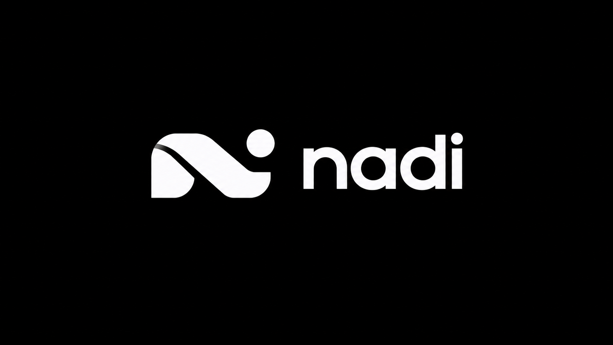

Z
Zayd
NADI AI Concierge
DeepSeek v4.1 Flash
•
RootSys Runtime
•
Edge Node (ap-southeast-1)
SYSTEMS INTEGRATION AGENCY

Your workflow. AI that fits.
I am Zayd, your NADI AI Concierge. I'm here to explain how NADI connects custom AI agents around your existing tools, data, and human checkpoints — without forcing you to remodel your business.
Workflow First
We begin with how your team operates, identifying manual friction before prescribing technology.
Connected Action
AI that retrieves context, drafts work, and coordinates steps across your current software stack.
Practical Control
Strict permission boundaries, human approvals for high-stakes steps, and transparent audit trails.
Select a topic to start our conversation:
Z
Zayd is thinking